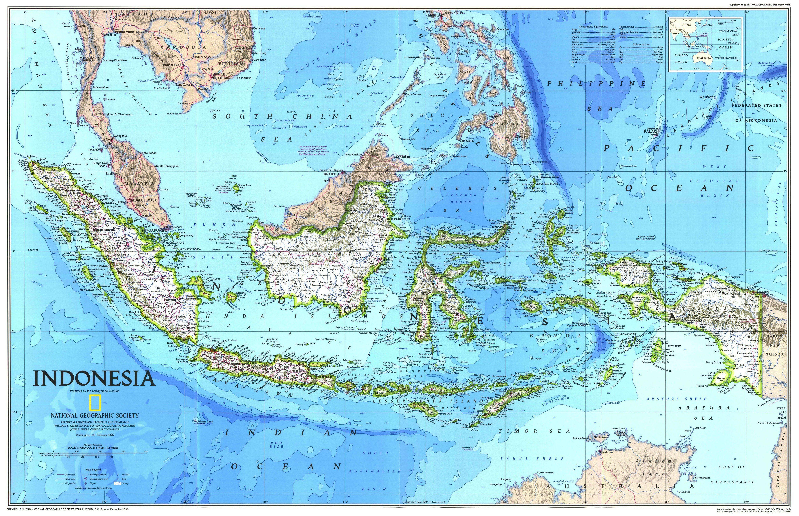

Negara Kesatuan Republik Indonesia
Indonesia (pengucapan bahasa Indonesia: [in.ˈdo.nɛ.sja]), dikenal dengan nama resmi Republik Indonesia atau lebih lengkapnya Negara Kesatuan Republik Indonesia, adalah negara kepulauan di Asia Tenggara yang dilintasi garis khatulistiwa dan berada di antara daratan benua Asia dan Oseania sehingga dikenal sebagai negara lintas benua, serta antara Samudra Pasifik dan Samudra Hindia. Indonesia merupakan negara terluas ke-14 sekaligus negara kepulauan terbesar di dunia dengan luas wilayah sebesar 1.904.569 km², serta negara dengan pulau terbanyak ke-6 di dunia, dengan jumlah 17.504 pulau. Nama alternatif yang dipakai untuk kepulauan Indonesia disebut Nusantara. Selain itu, Indonesia juga menjadi negara berpenduduk terbanyak ke-4 di dunia dengan penduduk mencapai 277.749.853 jiwa pada tahun 2022, serta negara dengan penduduk beragama Islam terbanyak di dunia, dengan penganut lebih dari 238.875.159 jiwa atau sekitar 86,9%. Indonesia adalah negara multiras, multietnis, dan multikultural di dunia.